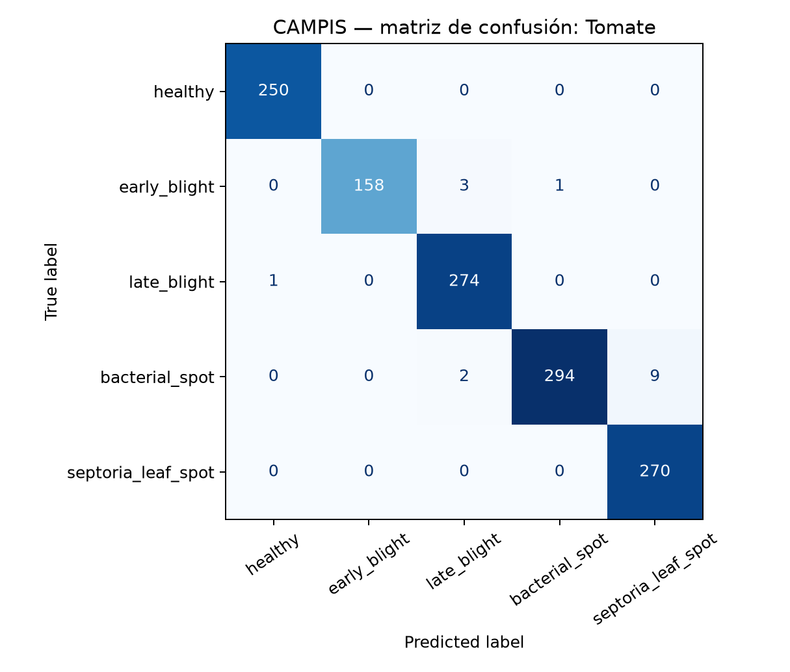
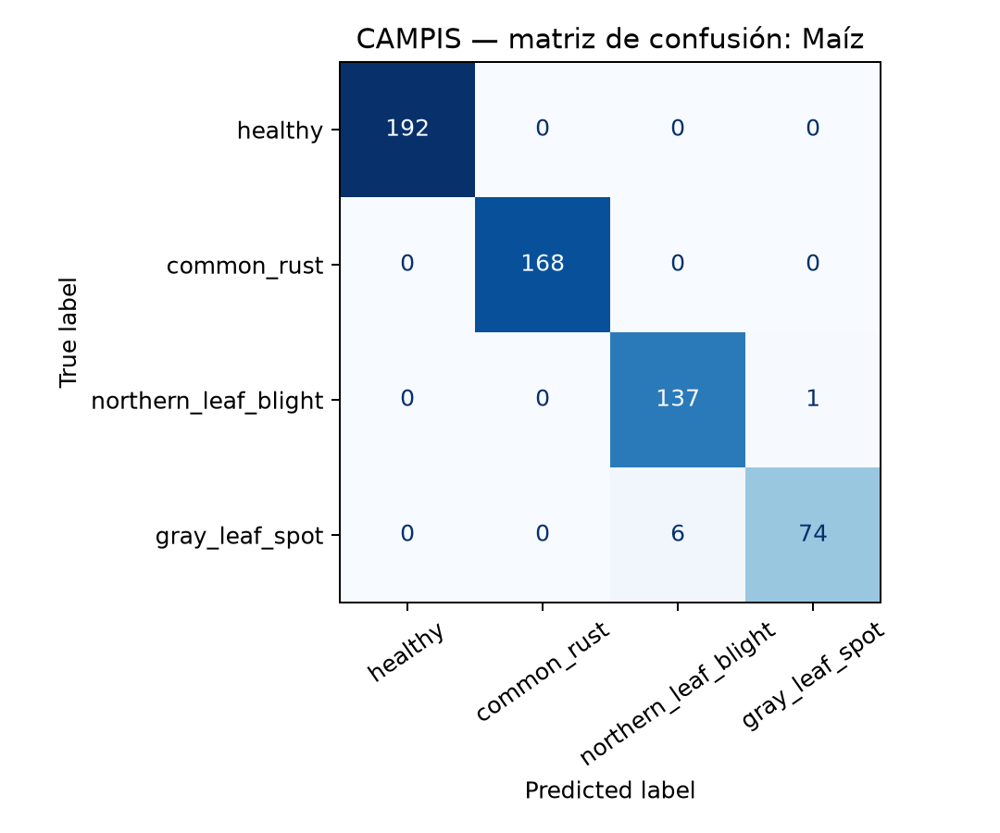
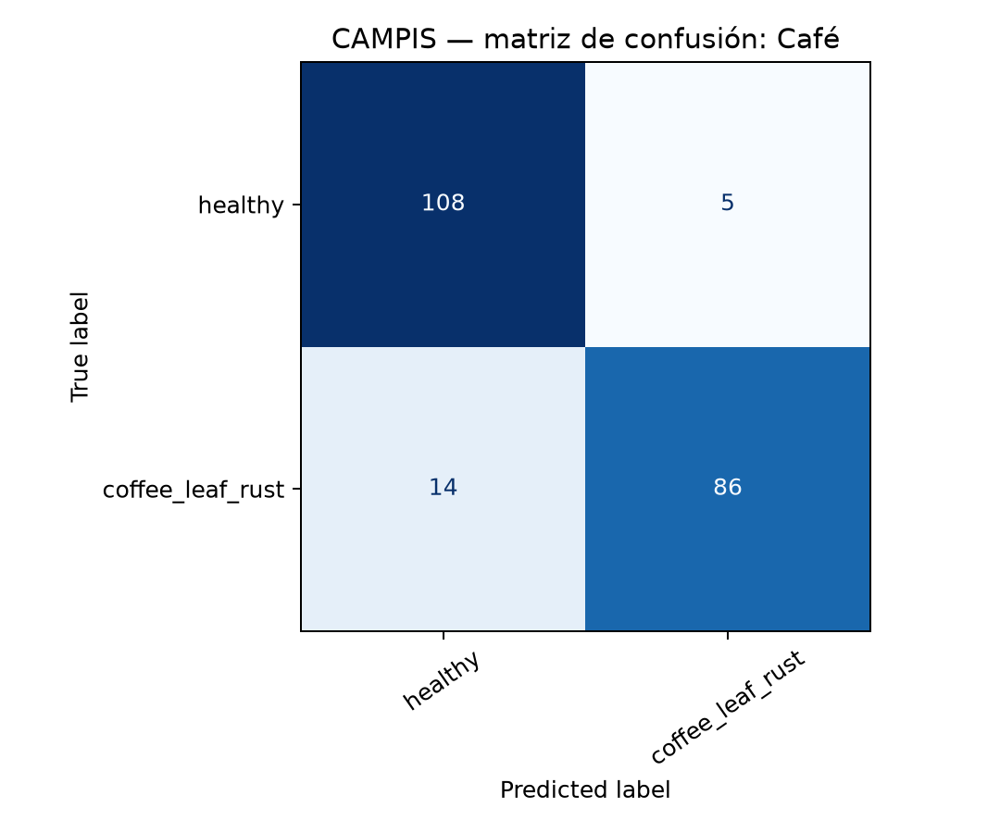
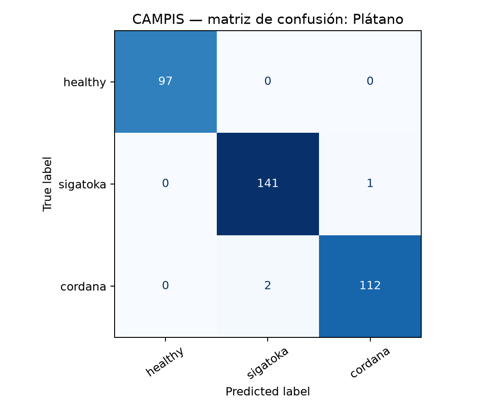
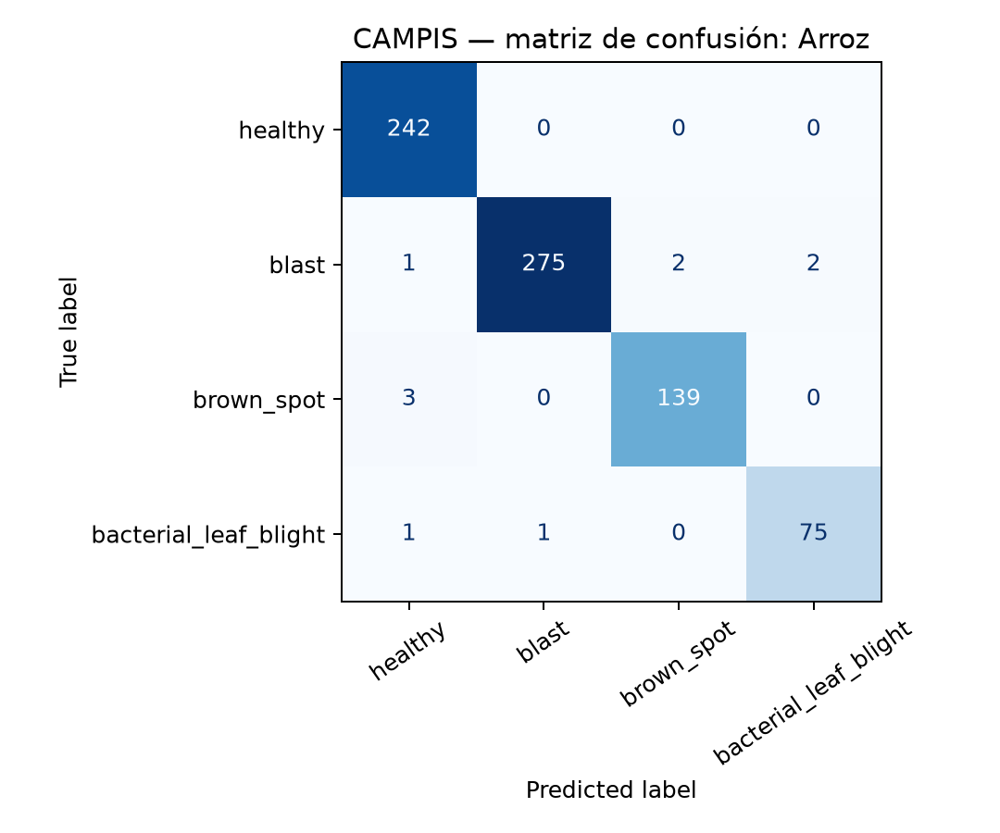

CAMPIS · evaluación del mejor modelo
Resultados del modelo multicultivo
Evaluación sobre 3,147 imágenes de prueba. La selección manual de cultivo limita cada predicción a las enfermedades de ese cultivo.
F1 macro entre cultivos97.12%
Resultado por cultivo
Tomate · 5,878 entrenam.98.77%F1 macro · PlantVillage
Maíz · 2,696 entrenam.98.25%F1 macro · PlantVillage
Café · 974 entrenam.90.98%F1 macro · RoCoLe v2
Plátano · 1,648 entrenam.99.21%F1 macro · Banana Leaf Dataset
Arroz · 3,468 entrenam.98.38%F1 macro · Paddy Doctor
Lectura clave: café requiere la siguiente mejora prioritaria: 14 hojas con roya se clasificaron como sanas y 5 hojas sanas como roya.
Detalle de clasificación
| Cultivo / fuente | Accuracy | F1 macro | Entrenamiento | Prueba |
|---|---|---|---|---|
| Tomate · PlantVillage | 98.73% | 98.77% | 5,878 | 1,262 |
| Maíz · PlantVillage | 98.79% | 98.25% | 2,696 | 578 |
| Café · RoCoLe v2 | 91.08% | 90.98% | 974 | 213 |
| Plátano · Banana Leaf Image Dataset | 99.15% | 99.21% | 1,648 | 353 |
| Arroz · Paddy Doctor | 98.65% | 98.38% | 3,468 | 741 |
Matrices de confusión


TomateAbrir matriz

MaízAbrir matriz

CaféAbrir matriz

PlátanoAbrir matriz

ArrozAbrir matrizModelo previo: papa
Experimento modelo3-solo-irish: 26,929 imágenes de entrenamiento Irish; clases: tizón temprano, saludable y tizón tardío.
| Conjunto de prueba | Accuracy | F1 macro | Muestras |
|---|---|---|---|
| Global | 95.60% | 94.36% | 6,115 |
| Irish | 98.25% | 97.65% | 5,769 |
| CAMPIS | 51.45% | 43.87% | 346 |
Advertencia de generalización: el modelo de papa fue entrenado sólo con Irish; el resultado CAMPIS muestra que su desempeño no está demostrado para condiciones locales sin incorporar datos locales al entrenamiento.